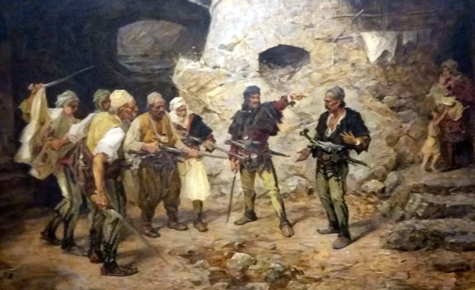

3. Jesam li ti Jelane
Ne t'ai-je dit Yelana
Druga Rukovet - 2ème guirlande : (01,42 - 02,15 )

Pavle Paja-Ivanović: "Le traître" (1875)
|
|

Duo de guitares Zoran Branković - Relja Turudić
NOTES
|
[*] Нисам пронашао отпевану верзију ове мелодије на вебу осим снимака 2. Руковета. Интерпретација двојице гитариста Зорана Бранковића и Реље Турудића, иако под јаким утицајем Шпаније, чини се да не искривљује превише народни архетип, Песма свакако алудира на устанке против Турака који су обележили историју Србије од 1804. (Карађорђе и Милош Обреновић) до 1878. године (Берлински конгрес).<бр> Ако је Јела (заљубљенa у хајдучког вођу) несумњиво деминутив од "Хелене", песма овој речи даје уобичајено значење: „јелка“. |
[*] Je n'ai pas trouvé sur le web de version chantée de cette mélodie hormis les enregistrements de la 2ème Rukovet. L'interprétation des deux guitaristes Zoran Branković et Relja Turudić, bien que fortement influencée par l'Espagne, ne semble pas trop dénaturer l'archétype populaire, La chanson fait certainement allusion aux insurrections contre les Turcs qui ont marqué l'histoire de la Serbie de 1804 (Karađorđe et Miloš Obrenović) à 1878 (Congrès de Berlin). Si Jela (Yela, amoureuse d'un chef de rebelles) est sans doute un diminutif d'Hélène, la chanson donne à ce mot son sens ordinaire: "sapin" |